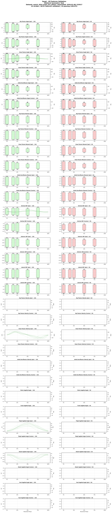
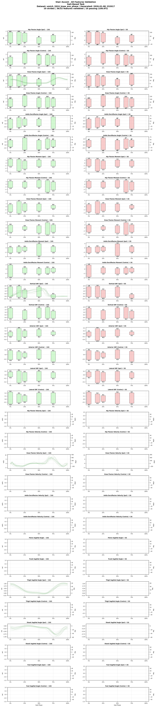
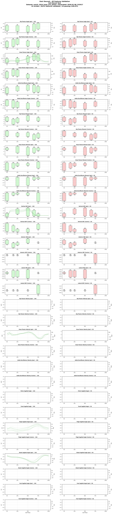

UMich 2024 (Knee Exoskeleton)
Historical study — unreviewed conversion. Local source files are available, but a rebuild is not scheduled. The download and checks below describe the earlier conversion.
Overview
- Short Code: UM24K
- Year: 2024
- Institution: Locomotor Control Systems Lab (University of Michigan)
Dataset from "A Versatile Knee Exoskeleton Mitigates Quadriceps Fatigue in Lifting, Lowering, and Carrying Tasks" (Science Robotics 2024). Contains ensemble-averaged biomechanical data from 10 able-bodied adults performing lifting-lowering-carrying (LLC) tasks while wearing a bilateral knee exoskeleton. Includes knee kinematics, segment angles, exoskeleton torque, and ground reaction forces.
Downloads
Dataset Information
Subjects and Tasks
- Number of Subjects: 10
- Tasks Included: Decline Walking, Incline Walking, Level Walking, Squat, Stair Ascent, Stair Descent
Subject Metadata
10 rows
The table below summarizes the subject_metadata key:value pairs per subject.
| Subject | exo | population |
|---|---|---|
| UM24_AB01 | worn_powered | able_bodied |
| UM24_AB02 | worn_powered | able_bodied |
| UM24_AB03 | worn_powered | able_bodied |
| UM24_AB04 | worn_powered | able_bodied |
| UM24_AB05 | worn_powered | able_bodied |
| UM24_AB06 | worn_powered | able_bodied |
| UM24_AB07 | worn_powered | able_bodied |
| UM24_AB08 | worn_powered | able_bodied |
| UM24_AB09 | worn_powered | able_bodied |
| UM24_AB10 | worn_powered | able_bodied |
Task Catalog
| Task | Task ID | Task Info |
|---|---|---|
| decline_walking | decline_15deg | incline_deg:-15,treadmill:false,assistance:exo_worn |
| incline_walking | incline_15deg | incline_deg:15,treadmill:false,assistance:exo_worn |
| level_walking | level | treadmill:false,assistance:exo_worn |
| squat | squat_lifting | variant:squat_lifting,assistance:exo_worn |
| stair_ascent | stair_ascent | step_height_m:0.178,step_number:4,assistance:exo_worn |
| stair_descent | stair_descent | step_height_m:0.178,step_number:4,assistance:exo_worn |
Feature Availability by Task
Coverage computed from `umich_2024_knee_exo_phase.parquet`.
Ground Reaction Forces
6 rows
| Feature | Decline Walking | Incline Walking | Level Walking | Squat | Stair Ascent | Stair Descent |
|---|---|---|---|---|---|---|
grf_anterior_contra_BW |
✖ | ✖ | ✖ | ✖ | ✖ | ✖ |
grf_anterior_ipsi_BW |
✖ | ✖ | ✖ | ✖ | ✖ | ✖ |
grf_lateral_contra_BW |
✖ | ✖ | ✖ | ✖ | ✖ | ✖ |
grf_lateral_ipsi_BW |
✖ | ✖ | ✖ | ✖ | ✖ | ✖ |
grf_vertical_contra_BW |
✖ | ✖ | ✖ | ✖ | ✖ | ✖ |
grf_vertical_ipsi_BW |
✔ | ✔ | ✔ | ✔ | ✔ | ✔ |
Joint Angles
18 rows
| Feature | Decline Walking | Incline Walking | Level Walking | Squat | Stair Ascent | Stair Descent |
|---|---|---|---|---|---|---|
ankle_dorsiflexion_angle_contra_rad |
✖ | ✖ | ✖ | ✖ | ✖ | ✖ |
ankle_dorsiflexion_angle_ipsi_rad |
✖ | ✖ | ✖ | ✖ | ✖ | ✖ |
foot_sagittal_angle_contra_rad |
✖ | ✖ | ✖ | ✖ | ✖ | ✖ |
foot_sagittal_angle_ipsi_rad |
✖ | ✖ | ✖ | ✖ | ✖ | ✖ |
hip_flexion_angle_contra_rad |
✖ | ✖ | ✖ | ✖ | ✖ | ✖ |
hip_flexion_angle_ipsi_rad |
✖ | ✖ | ✖ | ✖ | ✖ | ✖ |
knee_flexion_angle_contra_rad |
✖ | ✖ | ✖ | ✖ | ✖ | ✖ |
knee_flexion_angle_ipsi_rad |
✔ | ✔ | ✔ | ✔ | ✔ | ✔ |
pelvis_frontal_angle_rad |
✖ | ✖ | ✖ | ✖ | ✖ | ✖ |
pelvis_sagittal_angle_rad |
✖ | ✖ | ✖ | ✖ | ✖ | ✖ |
pelvis_transverse_angle_rad |
✖ | ✖ | ✖ | ✖ | ✖ | ✖ |
shank_sagittal_angle_contra_rad |
✖ | ✖ | ✖ | ✖ | ✖ | ✖ |
shank_sagittal_angle_ipsi_rad |
✔ | ✔ | ✔ | ✔ | ✔ | ✔ |
thigh_sagittal_angle_contra_rad |
✖ | ✖ | ✖ | ✖ | ✖ | ✖ |
thigh_sagittal_angle_ipsi_rad |
✔ | ✔ | ✔ | ✔ | ✔ | ✔ |
trunk_frontal_angle_rad |
✖ | ✖ | ✖ | ✖ | ✖ | ✖ |
trunk_sagittal_angle_rad |
✖ | ✖ | ✖ | ✖ | ✖ | ✖ |
trunk_transverse_angle_rad |
✖ | ✖ | ✖ | ✖ | ✖ | ✖ |
Joint Moments
6 rows
| Feature | Decline Walking | Incline Walking | Level Walking | Squat | Stair Ascent | Stair Descent |
|---|---|---|---|---|---|---|
ankle_dorsiflexion_moment_contra_Nm_kg |
✖ | ✖ | ✖ | ✖ | ✖ | ✖ |
ankle_dorsiflexion_moment_ipsi_Nm_kg |
✖ | ✖ | ✖ | ✖ | ✖ | ✖ |
hip_flexion_moment_contra_Nm_kg |
✖ | ✖ | ✖ | ✖ | ✖ | ✖ |
hip_flexion_moment_ipsi_Nm_kg |
✖ | ✖ | ✖ | ✖ | ✖ | ✖ |
knee_flexion_moment_contra_Nm_kg |
✖ | ✖ | ✖ | ✖ | ✖ | ✖ |
knee_flexion_moment_ipsi_Nm_kg |
✖ | ✖ | ✖ | ✖ | ✖ | ✖ |
Joint Velocities
6 rows
| Feature | Decline Walking | Incline Walking | Level Walking | Squat | Stair Ascent | Stair Descent |
|---|---|---|---|---|---|---|
ankle_dorsiflexion_velocity_contra_rad_s |
✖ | ✖ | ✖ | ✖ | ✖ | ✖ |
ankle_dorsiflexion_velocity_ipsi_rad_s |
✖ | ✖ | ✖ | ✖ | ✖ | ✖ |
hip_flexion_velocity_contra_rad_s |
✖ | ✖ | ✖ | ✖ | ✖ | ✖ |
hip_flexion_velocity_ipsi_rad_s |
✖ | ✖ | ✖ | ✖ | ✖ | ✖ |
knee_flexion_velocity_contra_rad_s |
✖ | ✖ | ✖ | ✖ | ✖ | ✖ |
knee_flexion_velocity_ipsi_rad_s |
✔ | ✔ | ✔ | ✔ | ✔ | ✔ |
Data Structure
- Format: Phase-normalized (150 points per gait cycle)
- Sampling: Phase-indexed from 0-100%
- Variables: Standard biomechanical naming convention
Historical check summary
- Status: ⚠️ Partial (90.0%)
- Stride Pass Rate: 90.0%
- Validation Ranges: Download validation ranges (source: contributor_tools/validation_ranges/default_ranges.yaml)
- Detailed Report: View validation report
Citation
Divekar, N.V., Thomas, G.C., Yerva, A.R., Frame, H.B., Gregg, R.D. A versatile knee exoskeleton mitigates quadriceps fatigue in lifting, lowering, and carrying tasks. Science Robotics 9, eadr8282 (2024). https://doi.org/10.1126/scirobotics.adr8282
Collection Details
Protocol
Data collected from 10 able-bodied participants performing fatiguing and non-fatiguing lifting-lowering-carrying (LLC) tasks with a bilateral knee exoskeleton. Tasks include squat lift-lower, level walking, stair ascent/descent (7 inch steps), and ramp ascent/descent (15 degrees). The publisher’s detailed README describes separate ensemble curves for each participant: 101 task-cycle samples by 10 participants. Each curve averages repeated cycles within a participant; these are not individual cycles or an average across all participants.
Processing Notes
Source data is already ensemble-averaged (101 points per cycle), resampled to 150 points for standardized format. Only knee angle available (no hip/ankle). Exoskeleton torque stored in custom column (exo_torque_knee_ipsi_Nm). GRF is body-weight normalized. Source data and README (CC0).
The source README’s introductory S1/S2 descriptions conflict with its detailed field descriptions and repository abstract. A rebuild must check actual file fields before assigning protocol labels. Participant identity, torque signs, segment reference frames and the earlier interpolation remain unreviewed. The averaged profiles do not provide individual cycle timing or variability.
Files Included
umich_2024_knee_exo_phase.parquet— Phase-normalized dataset- Validation report
- Conversion script in
contributor_tools/conversion_scripts/um24k/
Generated by Dataset Submission Tool on 2026-01-09 07:58
Recorded checks
Historical assessment — unreviewed release. These preserved results predate the observation contract and may contain inconsistent counts. They are not a current quality certification. Use the dataset limitations and versioned release evidence when available.
Report generated: 2026-01-08 23:20
Status Summary
| Metric | Value |
|---|---|
| Stride Pass Rate | 90.0% |
| Total Strides | 60 |
| Passing Strides | 54 |
Summary
Status: ⚠️ PARTIAL (90.0% valid)
Total Strides: 60
Passing Strides: 54
Task Breakdown
| Task | Pass Rate | Status |
|---|---|---|
| Decline Walking | 90.0% | ✅ |
| Incline Walking | 60.0% | ❌ |
| Level Walking | 90.0% | ✅ |
| Squat | 100.0% | ✅ |
| Stair Ascent | 100.0% | ✅ |
| Stair Descent | 100.0% | ✅ |
Validation ranges snapshot embedded below.
Validation Ranges Snapshot
Download the YAML snapshot used for this validation: Download
Source ranges file: contributor_tools/validation_ranges/default_ranges.yaml
Phase plots
Loading task averages…
Earlier validation plots
Open the original pass/fail figures
These figures document earlier checks. The interactive averages above do not reproduce these pass/fail classifications.
VALIDATION_GALLERY_STARTDecline Walking
Incline Walking
Level Walking
Squat

Stair Ascent

Stair Descent

Generated from umich_2024_knee_exo_phase.parquet on 2026-01-08 23:20